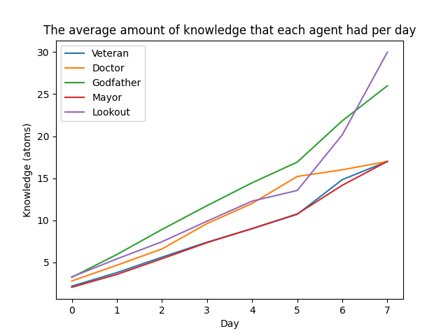
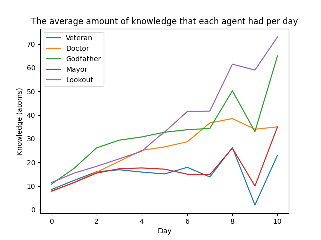
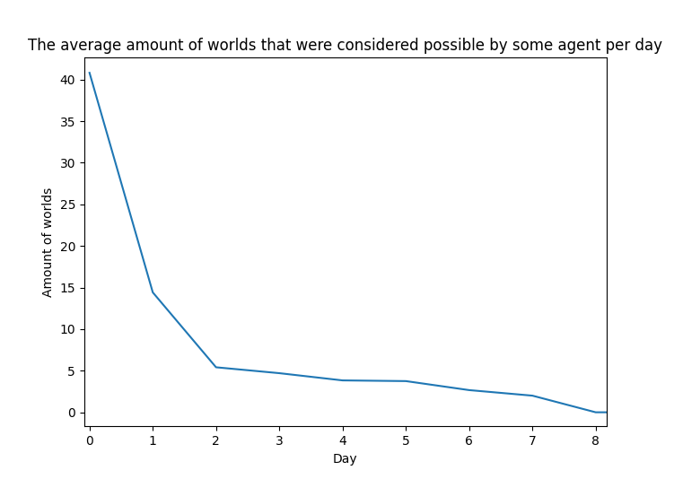
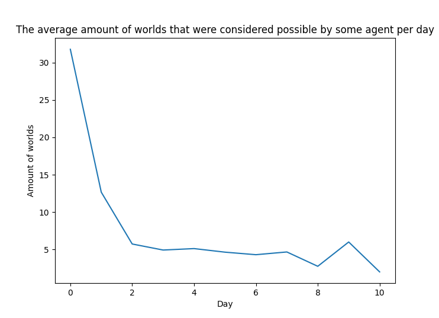

Table 1: The win rates of the town and mafia factions over 1000 runs, using axioms and not using axioms.
Axioms
No Axioms
Town wins
70.9%
44.6%
Mafia wins
29.1%
55.4%
Table 2: The win rates of the town and mafia factions over a 1000 runs, when
the godfather targeted a specific role first. In the runs the agents used the
axioms to make inferences.
Veteran
Doctor
Mayor
Lookout
Town wins
65.4%
80.7%
49.5%
72.8%
Mafia wins
34.6%
19.3%
50.5%
27.2%

Figure 1: The amount of knowledge the agents had on average for each day, when agents were not using axioms to obtain more information.

Figure 2: The amount of knowledge the agents had on average for each day, when agents were not using axioms to obtain more information.

Figure 3: The amount of worlds that were considered possible by any agent, when agents were using axioms to obtain more information.

Figure 4: The amount of worlds that were considered possible by any agent, when agents were not using axioms to obtain more information.
Group 03 Isabelle Tilleman (s3656586), Tumi Moeng (s4813405), Stijn de Vries (s3447146)